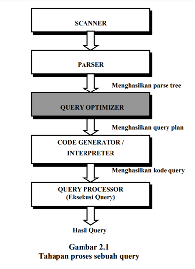

Query dapat diartikan sebagai capability (kemampuan) database pada komputer untuk menampilkan/menyimpan informasi tertentu. Namun perlu diketahui bahwa kemampuan tersebut hanya berupa pre-defined code artinya jika permintaan tidak sesuai dengan informasi yang tersimpan di database, maka permintaan tidak dapat diproses.
Umumnya query dibagi dalam dua jenis yaitu :
Select query merupakan permintaan atas suatu informasi yang tersimpan dalam database.
Action query merupakan kegiatan updating (pembaharuan), insert (penambahan) maupun penghapusan sebagian atau keseluruhan informasi dalam database.
Query mampu memenuhi permintaan dan penyimpanan data dari banyak pengguna, itu sebabnya query disebut sebagai bagian terpenting pada proses pengolahan database. Adapun Structure Query Language (SQL) merupakan bahasa query yang menjadi standar manajemen database. SQL ini sedang populer di kalangan Database Administrator (DBA).
Sebuah query yang diekspresikan dalam sebuah bahasa query tingkat tinggi seperti SQL mula-mula harus dibaca, diuraikan dan disahkan (scanning, parsing, validating)1. Query tersebut kemudian dibentuk menjadi sebuah struktur data yang biasa disebut dengan query tree. Dan kemudian DBMS (Database Manajemen Sistem) harus merencanakan sebuah strategi eksekusi untuk mendapatkan kembali hasil dari query dari file-file database. Tahapan-tahapan proses dari sebuah query di dalam sebuah sistem database ditunjukkan pada gambar 2.1. Berikut penjelasan dari masing-masing tahapan : 
Operasi-operasi relasi aljabar umumnya dibagi ke dalam dua kelompok. Kelompok pertama, termasuk sekumpulan operasi-operasi dari sekumpulan teori matematika yang dapat dipakai karena tiap-tiap relasi ditetapkan menjadi sekumpulan tuple-tuple. Sekumpulan operasi-operasi tersebut termasuk:
Kelompok yang kedua terdiri dari operasi-operasi yang khusus dibuat untuk database-database relasional. Yang termasuk dalam kelompok yang kedua adalah:
Untuk mengevaluasi ekspresi yang membawa banyak operasi di dalamnya, kita dapat melakukan perhitungan setiap operasi satu per satu. Namun, dalam sistem pemrosesan queri, menggunakan dua metode untuk mengevaluasi ekspresi yang membawa banyak operasi. Metode tersebut adalah:
Dalam metode ini, ekspresi yang diberikan mengevaluasi satu operasi relasional dalam satu waktu. Selain itu, setiap operasi dievaluasi dalam urutan atau urutan yang sesuai. Setelah mengevaluasi semua operasi, keluarannya diwujudkan dalam hubungan sementara untuk penggunaan selanjutnya. Ini membawa metode materialisasi pada kerugian. Kerugiannya adalah bahwa ia perlu membangun hubungan sementara tersebut untuk mewujudkan hasil operasi yang dievaluasi, masing-masing. Hubungan sementara ini ditulis pada disk kecuali ukurannya kecil.
Pipelining adalah metode alternatif atau pendekatan untuk metode materialisasi. Dalam pipelining, ini memungkinkan kami untuk mengevaluasi setiap operasi relasional ekspresi secara bersamaan dalam pipeline. Dalam pendekatan ini, setelah mengevaluasi satu operasi, keluarannya diteruskan ke operasi berikutnya, dan rantai berlanjut hingga semua operasi relasional dievaluasi secara menyeluruh. Dengan demikian, tidak ada persyaratan untuk menyimpan hubungan sementara dalam pemipaan. Keuntungan dari pipelining membuatnya menjadi pendekatan yang lebih baik dibandingkan dengan pendekatan yang digunakan dalam metode materialisasi. Bahkan biaya dari kedua pendekatan dapat memiliki perbedaan di antara keduanya. Namun, kedua pendekatan tersebut menjalankan peran terbaik dalam kasus yang berbeda. Dengan demikian, kedua cara tersebut layak di tempatnya.